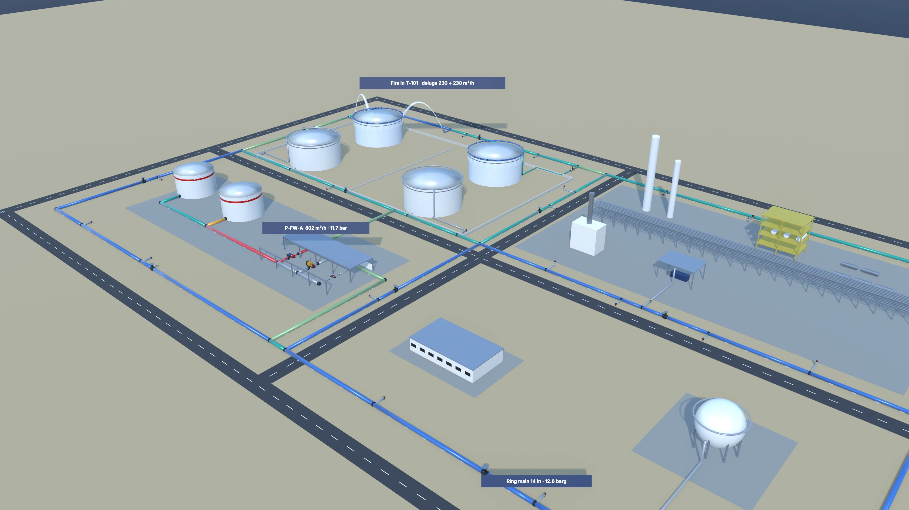
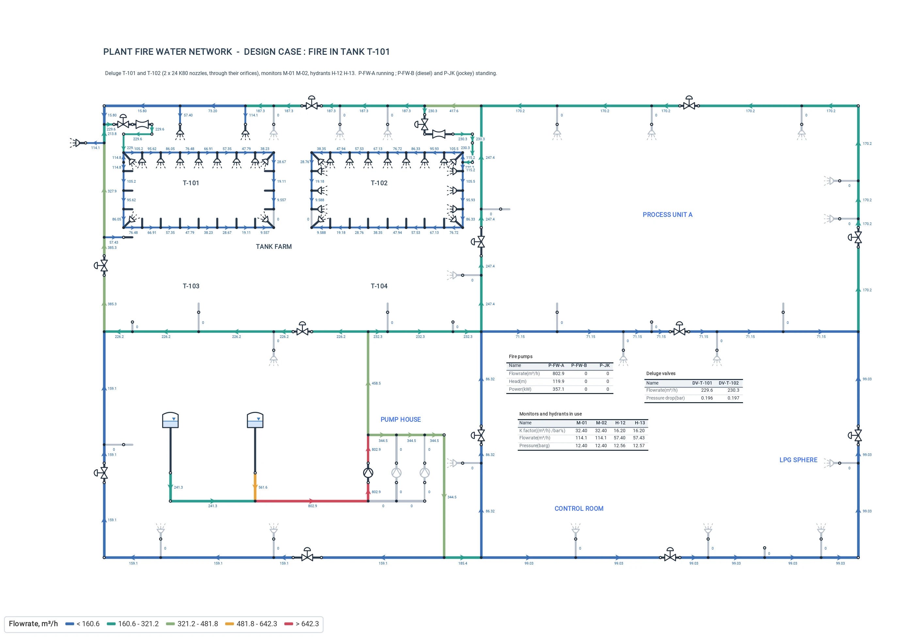
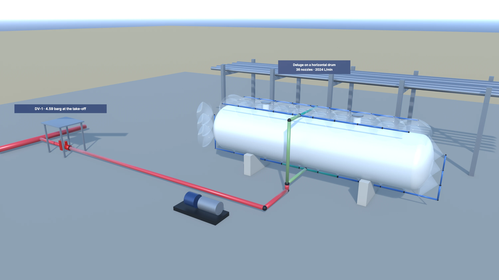
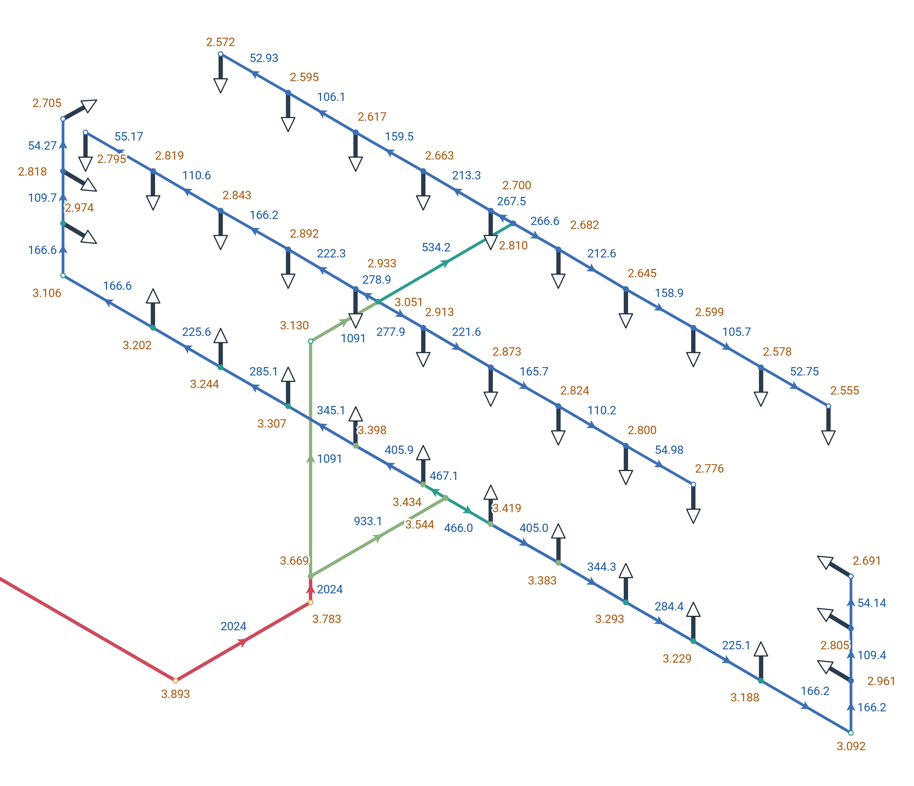
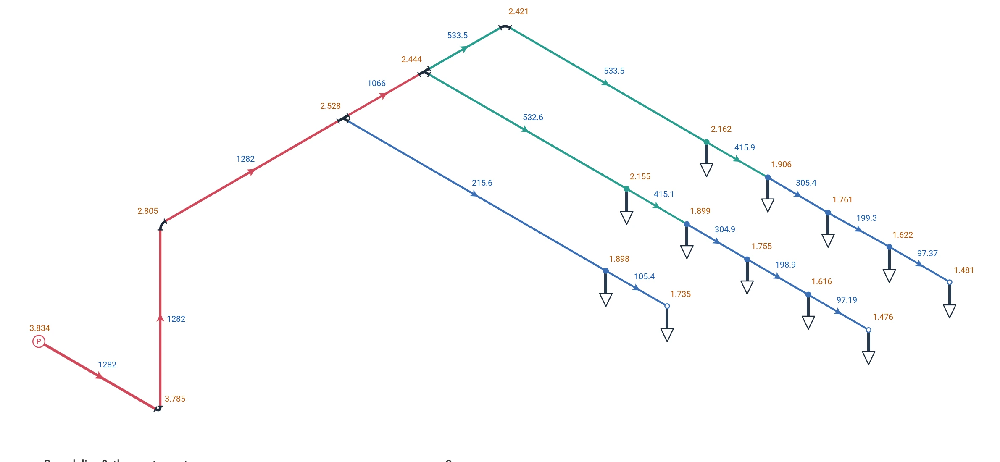
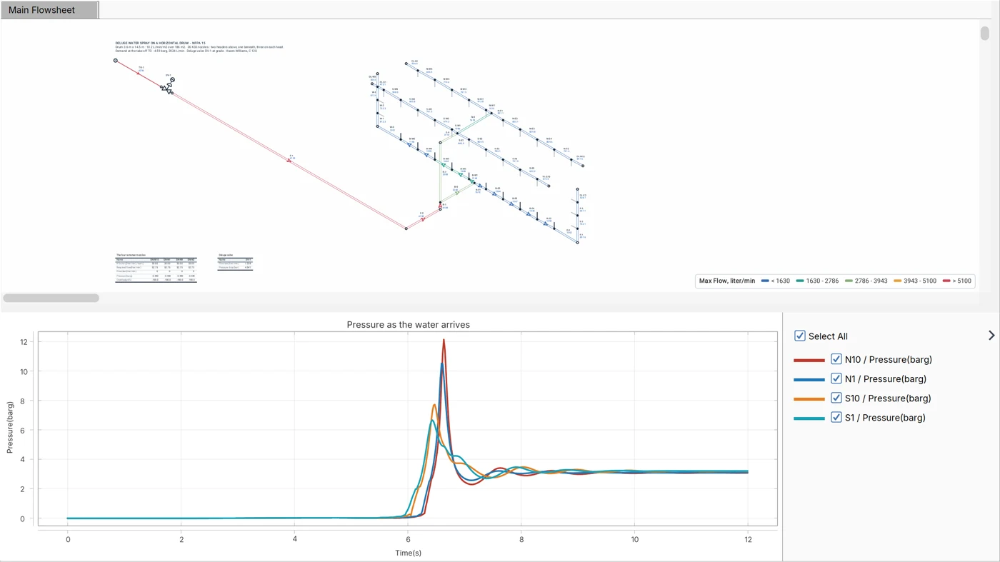
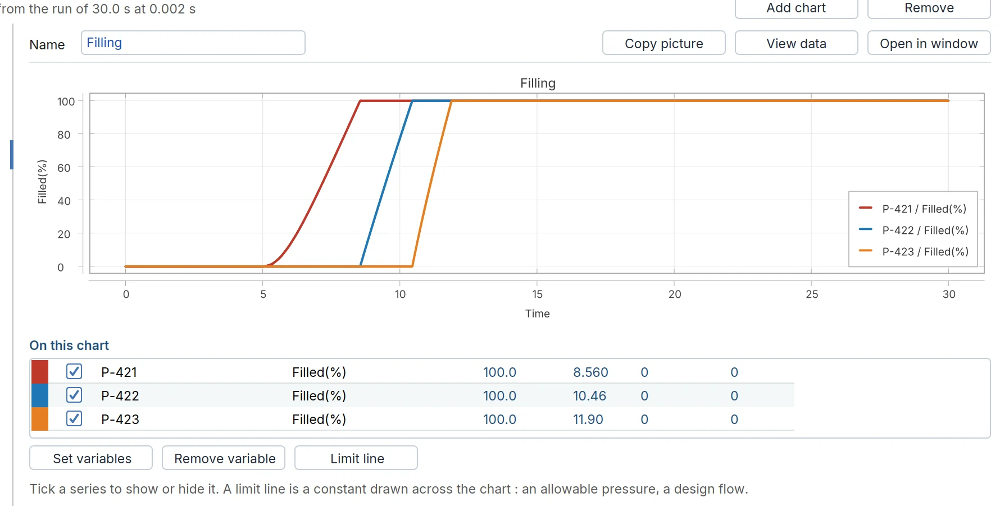

Four fire water jobs, one tool: a plant's ring main, a deluge on a vessel, the sprinklers of a building, and the first seconds after a deluge valve opens on dry pipe. Each a Flowmax model, solved, with the numbers it gave.
The plant's ring main in one model, each deluge a block and every fire case in the Scenario Manager, a deluge on the isometric sheet, and the same deluge in time as its dry pipe fills.
A simple deluge on the isometric sheet, fed by a fire main at 7 barg: drawn, run, Adjust for the pressure the deluge valve must hold downstream, the lines sized by velocity and checked with a run, and Auto Adjust setting the valve again.
A plant of 420 by 260 m: a 14 in ring main round it and two 12 in cross mains with twelve sectional valves, 19 hydrants and 10 monitors, two storage tanks and the pump house, and the deluge valve, restriction orifice and cooling ring of each of four storage tanks. 268 links, every pipe its true length.
The design fire is a fire in tank T-101: its deluge open, and that of T-102 beside it; two monitors on T-101; two hydrants. Does the duty pump hold it?
| Design fire, fire in T-101 | Flowmax |
|---|---|
| Duty pump P-FW-A (electric) | 803 m³/h at 120 m, 357 kW |
| Deluge T-101 / T-102, 24 K80 nozzles each | 230 / 230 m³/h |
| Nozzle pressure, 2.5 barg minimum | 3.97 to 4.02 barg |
| Monitors M-01, M-02 / hydrants H-12, H-13 | 114 / 57 m³/h each |
| Ring main, 14 in | 12.4 to 12.7 barg |
| P-FW-B (diesel), P-JK (jockey) | standing by |


Above, a 3D illustration drawn by ProcessTool from the Flowmax results — Flowmax itself does not draw in 3D; below, the model on the Flowmax sheet, as the program shows it. Click to enlarge.
A horizontal drum 3.6 m across and 14.5 m long, sprayed at 10.2 L/min/m² over its 186 m²: 36 K33 nozzles on two headers above it and one beneath, three on each head, fed at mid-length from a deluge valve at grade. Drawn on the isometric sheet, the fittings at their NFPA equivalent lengths.
The question every deluge calculation asks: what pressure must the fire main give at the take-off for the remotest nozzle to get its flow?
| Deluge on a drum | Flowmax |
|---|---|
| Pressure needed at the take-off | 4.59 barg |
| Total flow, against 1,899 L/min required | 2,024 L/min, 6.6 % over |
| Flow a nozzle, 52.8 L/min required | 52.8 to 61.2 L/min |
| Remotest nozzle | exactly its required flow |

Above, a 3D illustration drawn from the results, not a Flowmax view; below, the model in Flowmax’s isometric mode.

A warehouse, Ordinary Hazard Group 2: 8.1 mm/min over a remote area of 139 m², twelve K80 sprinklers on three branch lines, the cross main, the riser with its alarm valve and the underground from the town main. Tees and elbows sit on the isometric sheet with their NFPA lengths.
Adjust finds the pressure at the town main that gives the most remote sprinkler exactly its flow, and the report plots the town main's flow test against the demand on Q1.85 paper, as NFPA 13 draws it.
| Warehouse sprinklers | Flowmax |
|---|---|
| Pressure needed at the town main | 3.83 barg |
| Sprinkler demand / with 950 L/min of hoses | 1,282 / 2,232 L/min |
| Most remote sprinkler | 97.2 L/min at 1.48 barg |
| Margin on the town main's supply curve | 1.11 bar |

When a deluge valve opens on dry pipe, the water takes time to reach the last nozzle, and the front that arrives there can put a pressure on the pipe that the steady state never shows. The same Flowmax model, run in the Transient mode, answers both. On the drum deluge, a capped dead leg at the end of each header traps air that cushions the arriving water.
| Dry systems in time | Flowmax |
|---|---|
| Deluge on the drum: last nozzle wet, valve opening in 3 s | 4.3 s after it starts to open |
| Header ends with a 4 m capped dead leg | 12 barg at most, the air cushions the front |
| Three deluge branches full of water | 8.6, 10.5 and 11.9 s |
| Offshore dry riser: water at the top deck | 33.4 s |
| Deluge: first and last nozzles flowing | 3.6 and 6.9 s |
| Fire cases against a 16 barg limit | 8 cases, one chart |


Plants change and the fire water documents fall behind. ProcessTool models the network as built, runs every fire case following NFPA calculation methods, checks the fire pumps against their curves, and issues the calculation report, the line list and the nozzle layouts, with the Flowmax model so they stay up to date.
These systems are worked examples built by ProcessTool to show the method; their layouts, flows and conditions are illustrative.
Request a free trial with these examples, or ask us for the calculation and the documents.